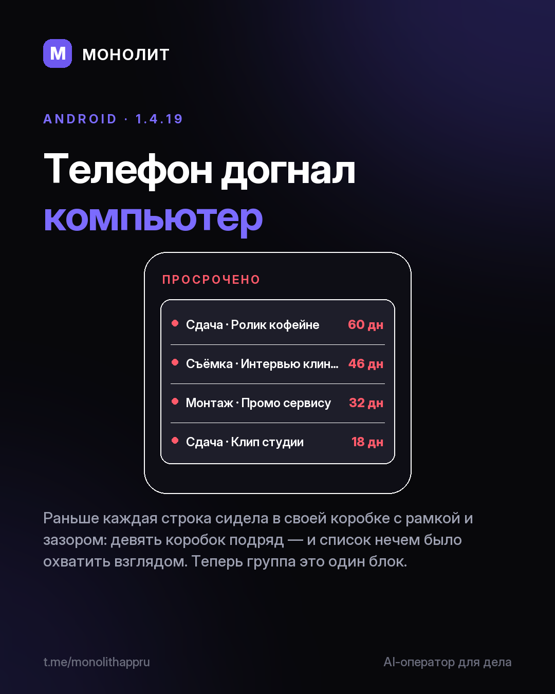

Дневник разработки · 31.07.2026
1.4.19 — телефон догнал компьютер, а данные перестали утекать

«Центр важного» держал каждый сигнал в отдельной коробке: девять коробок подряд, охватить взглядом нечем. Стало — один блок с тонкими разделителями, как на компьютере.
Хуже, чем некрасиво: сообщение о сбое сервиса рисовалось только на широком экране. На телефоне единственный канал «у нас проблема» был невидим. Починил.
Про данные, тремя строками:
• Android сам копировал базу в облачный бэкап Google — мы этот флаг не выставляли вовсе. Выключено.
• Открытый HTTP был разрешён всему приложению. Наружу теперь только шифрованный канал.
• Скопированный ключ доступа исчезает из буфера через минуту, а не лежит там до перезагрузки.
Честно о незакрытом: сама база на Android пока не шифруется, движок работает только в Windows-версии. Это следующая работа, а не галочка.
1.4.19 ушла на модерацию в RuStore.
МОНОЛИТ — учёт заказов, клиентов и денег одной фразой. Windows и Android, бесплатная бета.
Скачать Читать канал